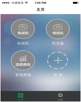

云朵WiFi智能遥控器
*****************************
配置指南 *****************************
手机扫描APP二维码或者输入以下网址下载云朵智慧家软件：
http://cloud.indeo.cn/soft/indeocenter.html
接入电源，等待30s红灯由长亮变慢闪后进入配置模式，否则按下复位键1s，红灯由快闪→慢闪后进入配置模式，或者长按复位键5秒（恢复出厂设置），等待30秒红灯慢闪。
安卓手机连上家里的无线路由器，进入云朵智慧家软件，点击【设置】→【配置设备】，自动获取无线路由器名称，手动输入wifi密码，点击开始配置。
红灯由慢闪至快闪，最后熄灭，表示配置成功，手机软件提示配置成功。
点击【首页】，点击右上方“+”，选择设备，选择模板，命名，设备添加成功。
手机扫描APP二维码或者输入以下网址下载云朵智慧家软件：
http://cloud.indeo.cn/soft/indeocenter.html
接入电源，等待30s红灯由长亮变慢闪后进入配置模式，否则按下复位键1s，红灯由快闪→慢闪后进入配置模式，或者长按复位键5秒（恢复出厂设置），等待30秒红灯慢闪。
苹果手机，点击【设置】进入无线局域网，找到indeo的WiFi信号，连上此信号。
4.链接WiFi
进入云朵智慧家软件，点击【设置】→【配置设备】，自动获取无线路由器名称，手动输入WiFi密码，点击开始配置。
红灯由慢闪至快闪，最后熄灭，表示配置成功，手机软件提示配置成功。
点击【主页】，主页下的【添加】框，选择设备，选择模板，命名，设备添加成功。

A1：远程模式需要将设备配置到连上Internet的WiFi路由器，在任何能上网的地方均可进行控制，但在该模式下只能进行控制，不能进行学习；直连模式是指手机连接到设备配置的路由器或则是设备中继出的网络上，在该网络下您可以进行控制和学习操作。
A2：长亮：设备正在启动；
长灭：设备配置成功，正常工作；
快闪：正在配置或者正在升级固件；
慢闪：进入配置模式；
间歇闪烁：设备正在连接路由器。
A3：周期闪烁：开始学习；
单次闪烁：正在控制。
A4：离线：设备之前配置成功，此时没有链接上路由器；
远程：设备和客服端不在同一个局域网。
A5：在设备启动后，短按复位键1s，表示重新配置；长按复位键5s表示恢复出产设置，需要重新等待启动，并开始配置设备。
Q6：确认手机和设备连上同一个局域网，也就是在同一个路由器下面。
成都云朵技术有限公司
地址：成都市高新区百叶路1号求实楼一层
官方网址：www.indeo.cn | 服务邮箱：support@indeo.cn
服务热线：+86-028-87820707 | 技术支持：18980004157
官方微信：cdyunduo | 粉丝QQ群：243570214